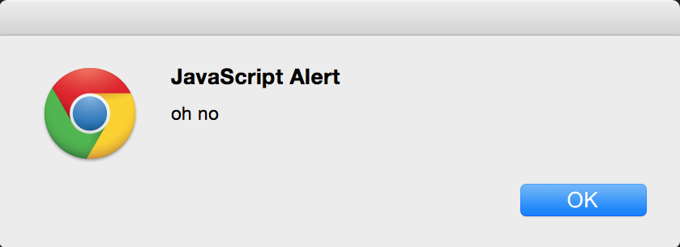

# Injection
## OWASP #1
Note:
- This presentation is a continuation of the SQL injection workshop
- We're going to talk about more types of injection
# But first
## Why care?
(always a valid question)
## Why The Initiative? (tm)
To me, security is a kind of social justice.
## So. On that note :)
### Types of injection
- It's not just about SQL injection
- Injection can happen anywhere user input is interpeted
## Other types of injection
- Command injection
- Environment variable injection
- Regular expression injection
- Path injection
- Header injection
- LDAP injection
- JavaScript injection (XSS)
## Where can injection occur?
- Forms (this we all know)
- URLs (even more dangerous when bitly encoded)
- HTTP Headers
- File uploads
- Log files
- etc.
HTTP/1.1 302 Moved Temporarily
Location: http://site.com/index?page=account
Content-Length: 0
HTTP/1.1 200 OK
Content-length: 31
<html>hacked</html>
Javascript injection
json = '{ "data": "some data" }';
var data = eval('(' + json + ')');
// data = Object {data: "some data"}
json = 'alert("oh no")'
=>

## And now: SQL Injection
$name = "Robert'); DROP TABLE Students;--"
SELECT * FROM Students WHERE name = '$name'
=>
SELECT * FROM Students WHERE name = 'Robert'); DROP TABLE Students;--'
Vulnerable App
$ telnet $IP 8888
Hi what is your first name? Bob
Hi, Bob Smith
// tip 1: sql used by app
select * from users where first_name = 'name'
// tip 2: derby is wierd
select * from x -- // crash
select * from x -- anytext // valid
## demo
Note:
- java -jar target/injection-1.0-SNAPSHOT-jar-with-dependencies.jar
- ' or 1=1 --comment
- for i in $(seq 0 10); do echo "' or 1=1 offset $i rows --comment" | java -jar target/injection-1.0-SNAPSHOT-jar-with-dependencies.jar; done
## So what do we have to lose?
- Confidentiality ✓
- Integrity ✓
- Availability ✓
Note:
- Injection vulnerabilities threaten all three
## Secure Code Checklist
- using parameterized queries
- encoding untrusted data
- validation (in as many layers as possible)
- whitelisting when possible
- fail gracefully
Note:
- using parameterized queries
- these make the database do the interpolation for you
- never concatinate strings to create queries!
- encoding untrusted data
- untrusted data is the most fundamental idea of secure coding
- always know when data is potentially evil
- chose encoding over sanitization
- validation (in as many layers as possible)
- can help make attacks more difficult
- but is not a solution in and of itself
- whitelisting when possible
- accepting untrusted data is dangerous
- if there is no need to, don't!
- fail gracefully
## Fix it!
git clone https://github.com/jacksingleton/injection-workshop.git
cd injection
cat README-participant.md
Note:
*hands on option*
- move around the room and help each pair implement the fix
## Learn more
- sql injection prevention cheat sheet: *https://www.owasp.org/index.php/SQL_Injection_Prevention_Cheat_Sheet*
- owasp page: *https://www.owasp.org/index.php/Top_10_2013-A1-Injection*
- sqlmap: *http://sqlmap.org/*
Note:
- owasp references are good to look at when you think you're at risk of an injection attack
- sqlmap is a tool for automating sql injection, fun to play around with in your free time
## Conclusion
- injection can happen anywhere user input is interpreted
- fundamentally: don't trust user input
- sanitize all input!